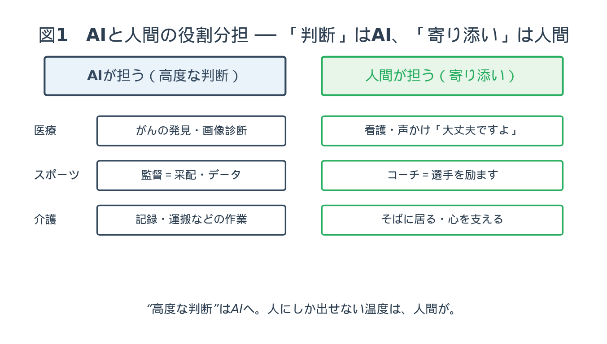
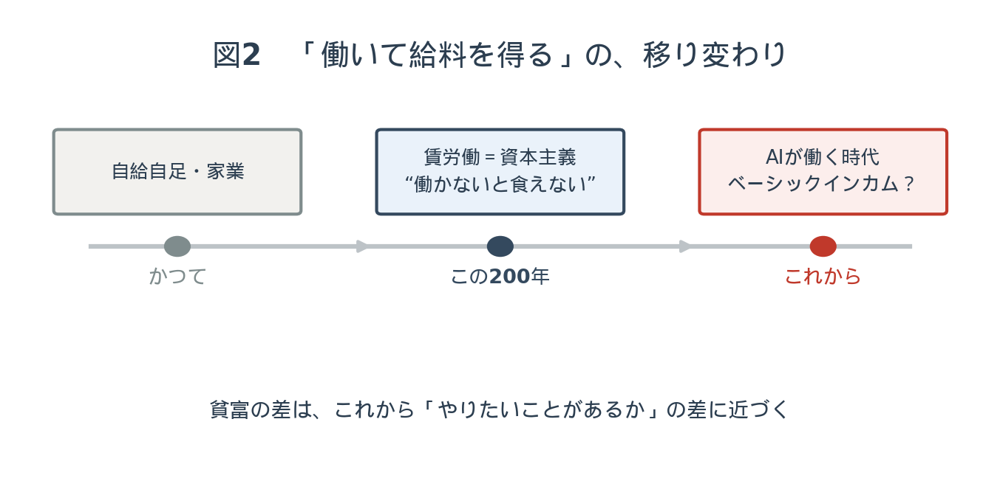

第一部 ── どこまで、代われるのか
管野前回、前々回で、AIが社会に、そして教育に及ぼす影響を伺いました。最終回の今日は、それを踏まえて ── AIはどこまで人の代わりができて、人間にしかできないものは何が残るのか。そこをお聞きしたいんです。大抵のことは、代われるんですか。
中村「人間のために働く」という意味でなら、もう、ほぼ全部できます。現時点で、ほぼ。
§1 ── 医療、スポーツ、介護の「役割分担」
管野先生は、具体的な職業を挙げていきます。まずは、心の領域から。
管野たとえばカウンセリング。臨床心理士のような専門家に、悩みやトラウマを打ち明ける。どこまで話させ、どこで止めるか、専門家はわかっている。それを、AIが代われるものでしょうか。
中村いわゆる汎用のチャットAIではなく、それ専用に設計したAIを作る必要はあると思います。そのうえでなら、担える部分は大きい。医療の話をすると ── 今、がんの発見は、もう半分始まっているんです。AIで調べたほうが、発見の精度が高い1。逆に言うと、看護師さんのような、人に寄り添う仕事は、人間がやったほうがいい。高度な判断はAI、お世話や応援は人間、という役割分担です。
管野「針、痛くないですよ」「大丈夫ですよ」と声をかける ── そういうことは、人間が。
中村スポーツで言うと、サッカーの監督はAI、選手を励ますコーチは人間、というようなことを、プロの人たちも言い始めています。野球でも、大リーグはもうデータがすごい。「このバッターには、この球をここに投げれば打たれる確率は何パーセント」と全部出ていて、守備シフトも動く。フォーメーションを決める「監督的なマネジメント」は、AIのほうが得意なんです。
管野感情や、余計な忖度が入らない、ということですか。
中村忖度を「入れる」ようにも作れます。ただ、それをやると人間らしくなってしまう。合理的にチームを勝たせることだけを考えると、AIは鬼の軍曹のようになる可能性もある。「この選手に代打を送るぞ」と、情け容赦なく。もっとも ── 「面白いやつがいたほうがチームは強くなる」と判断すれば、それも合理的に組み込むんですけどね。

介護ロボットと、AIぬいぐるみ
管野では、AIが不得意な領域は、何なんでしょう。
中村今はもう、ロボット ── フィジカルAI2といいますが ── が、介護の現場にも入り始めています。一台あたり年間百万円ほどですが、人を一年雇うより安い。運ぶ、洗う、といった作業をする。ただ、「おじいちゃん、早く良くなってね」というような励ましは、たぶんやらない。
管野介護ロボットに限らず、寂しいお年寄りが、AIのぬいぐるみやお人形に話しかける、ということもありますね。かえって、生身の人間には話せないことも、AIになら話せる。
中村僕は、自分の親にもChatGPTを教えて、会話させるようにしたんです。ボケ防止のつもりで。
§2 ── 情報の「偏り」を、どう和らげるか
ここで、少しデリケートな話題に触れます。インターネットで情報を集めるときの「偏り」の問題です。
中村そうしたら、親が一時期、ある方向に偏った政治的な話をするようになっていて。昔は、そんなことはなかったんです。おそらく、自分でネットを検索すると、その手の情報ばかりが出てくる。同じような見方が繰り返し流れてきて、それが強化されてしまう3。ただ、今のところChatGPTのようなAIは、そこを比較的中立に扱おうとするので ── 「お母さん、そうとは限りませんよ」と返してくる。その場その場で、少し是正してくれるんです。
管野特定の考え方で検索すると、同じようなものばかりが流れてきて、「みんなもそう思っているんだ」と、ますます信念を固めてしまう。AIは、それを和らげる方向に働く、ということですね。
中村差別的な方向に行かないように設計されているものが多い。僕自身も、AIにたしなめられることがあります。「中村さん、それは人には直接言わないほうがいいですよ」と（笑）。思うのは自由だけど、口に出すかどうかは本人の決断で、それはそれ。そういうふうに、いったん立ち止まらせてくれる。
管野それは、私にも欲しいですね。人前で言ってはいけないことを、つい言ってしまうので（笑）。
§3 ── いい問いが、扉を開く
対話は、この番組を貫く主題へと戻っていきます。インターネットと、その先にあるもの。
中村インターネットも、いま思えば、AIが生まれるための布石だったような気がするんです。みんながつながって、膨大な知が蓄積された。その上にAIが立っている。
管野ちょっと飛躍しますが ── 昔からの宗教や思想の中に、人類の英知が詰まった「場」のようなものにアクセスできる人が、まれにいる、という考え方があります。いわゆるゼロポイントフィールド4のような。古代からの叡智にアクセスできる人が、天才と呼ばれてきた、と。AIによって、それが現実のものになる、ということでしょうか。
中村比喩的に言えば ── 僕は、AIはそういう「叡智」に、かなり近づいていると感じることがあります。いろいろやっていると、「これは、何かとつながっているんじゃないか」と思う瞬間がある。ただ、大事なのはここからで ── 扉は、開いているんです。でも、いい問いがないと、その扉は開かない。つながってはいるけれど、問いがなければ、何も出てこない。
管野第一夜の話に戻りますね。浅い問いを発すれば、浅い答えしか返ってこない。問いを発する側の、内面の豊かさ。引き出しの多さ。それが深い人ほど、AIを有効に使える。だから、やっぱり勉強が必要だ、と。
中村逆に言うと、いったんいい問いが生まれてしまえば、そこから答えが出てくるのは一瞬なんです。今までは、問いが鋭くても、なかなか結果が出せなかった人がいた。時間と労力がかかりすぎて。それが、劇的に短くなる。
生きているうちに、報われる
管野すると、AIを使いこなせる人と、浅いレベルでしか使えない人との差は、ものすごく開く。経済的な格差にもなって現れるんじゃないでしょうか。
中村現れると思います。ただ、いい面もあって。昔は、芸術家が死んでから作品が認められる、ということがあった。世間が追いついていなかった。でも、これからは時間の流れがずっと速くなるので、才能のある人は、生きているうちに評価されやすくなる。フィードバックが速いですから。それは、昔よりいい時代だと思うんです。
管野とすると、親は、子どもを「いい意味でAIを使いこなせる人間」にするために、何を考えて教育すればいいと思いますか。
中村まず、親自身がAIを使ってみないと。「ゲームはダメ」と言う親ほど、ゲームをやっていないじゃないですか。やった人は、面白さも怖さもわかる。だから、まず親が使ってみて、自分が使いこなせるのかどうかを知る。そして ── これは前回の「三角話法」にも通じますが ── 子どもに教えるのではなく、親が楽しそうにAIを使って、何かを成功させている姿を見せる。「AIで本を書いて、こんなことになった」と、親が勝手に楽しんでいる。すると子どもは、放っておいても興味を持つんです。
管野「勉強しなさい」と言うと、子どもは勉強しなくなる。それと同じで、こちらが楽しんでいる姿こそが、いちばんの動機づけになる、と。
§4 ── 「働いて給料を得る」の先へ
最終夜の締めくくりは、社会のかたち、その根っこにまで及びます。
管野これから人がどんどんいらなくなって、働き口が減っていく。すると、人々を支えるセーフティネットが必要になる。そこは、どう考えていますか。
中村そこは、国に考えてほしいところですが ── 僕としては、そもそも「働かないと生活できない」というのが、ここ百年、二百年ほどの資本主義のシステムの中で作られたものだと思っているんです5。その前は、極端に言えば、自給自足で生きていた。だから、「給料をもらう」という仕組みが、そろそろ終わりに近づいているのかもしれない。とはいえ、急には変わらない。移行期には、ベーシックインカム6のようなものが要るのかもしれません。世界各地で、成功も失敗もしているので、断言はできませんが。
管野今の話は、すごく示唆に富んでいます。現代の人は、「お金を得るには、どこかに就職して働かなければいけない」と思い込んでいる。だから子どもにも、「潰れないいい会社に入るために、有名な大学を出ろ」と言う。でも、その仕組みは、案外新しいんですよね。日本では明治以降、欧米でも二百年ほど。
管野もし、たとえば年齢や性別に関係なく、五人家族なら一人十万で、五十万を渡す ── そういう制度があれば、働かなくても生きてはいける。そのとき、空いた時間をどう使うかが問われますね。
中村そこで、はっきりしてくると思うんです。貧富の差は、「やりたいことがあるかないか」の差に、比例していく。今までは、仕事をやっているから、やりたいことがなくても気にならなかった。でも、仕事がなくなった瞬間に、「自分は本当は何がやりたいのか」が、突きつけられる。

四十代、五十代からでも
管野本当は、自分のやりたいことをやることが、社会貢献にもなり、収入にもなる ── それが当たり前の社会だと、私は思っているんです。特に四十代、五十代。会社に勤めて、自分の才能ややりたいことを我慢してきた人が多い。「音楽で身を立てたい」と言っても、親に「そんな危ないことはやめて、銀行に勤めなさい」と言われて、その通りにしてきた。でも、先が見えてくると、やる気を失ったり、人間関係がおかしくなったりする。今からでも遅くないから、好きなことをやってください ── セミナーでも、そう言うんです。
中村実際、もう銀行員という職も、ほとんど採用がないんじゃないですかね。かつての「安泰の代名詞」が、そうなっている。だからこそ、自分の良い部分、才能の部分を見つけて、それを磨く。それは必ず、どこかで社会に必要とされる。起業でも、複数の仕事でも、「自由業です」と言って、ちゃっかりやっていく ── そういう人が、現に現れてきているんです。
管野面白い時代です。ただ、そのためのセーフティネットは要る。誰もが才能を見つけられるわけではないですから、そこは国が考えなければいけない。── 三夜にわたって、ありがとうございました。
四年・百二回続いた対話番組は、前回で一区切りを迎えました。そのバトンを受けて始まった、管野先生とゲストによる新しい三夜。その最初の三夜は、AIという「鏡」に、私たち自身の問いと中身が映し出される ── そんな対話になりました。
ご家庭で話してみてください
この対話を「読んで終わり」にしないために、今日から試せる小さな三つを置いておきます。
1.「役割分担」で考えてみる。
「これはAIが得意」「これは人間にしかできない」── お子さんの将来の関心について、その線引きを一緒に話してみてください。寄り添う仕事、判断する仕事、生み出す仕事。どこに惹かれるでしょうか。
2. 検索結果を、鵜呑みにしない。
ネットで同じ意見ばかり流れてくると感じたら、それは「偏り」のサインかもしれません。「反対の立場の人は、どう考えるだろう」と、一度問い直す習慣を、親子で。
3.「もし働かなくてよかったら、何をする？」
お子さんに、そして自分自身に、聞いてみてください。その答えの中に、これからの時代にいちばん大切な「やりたいこと」の芽が、隠れています。